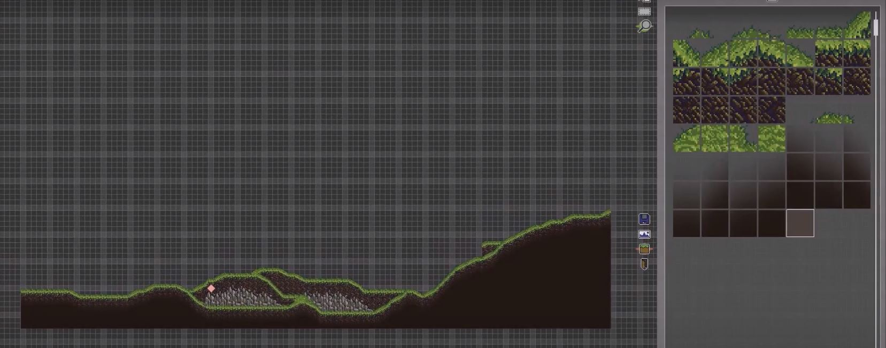

Definition
Quondam: (adj.) that once was, former
A snapshot of one of the opening scenes from the game.
Creation of the base camp within my custom level editor.
Overview
Quandom is a game telling a story of war in a ravaged world where all the game text is written as poetry. You only go on the missions your chosen character is assigned to, and can only understand the full story by replaying the game as each of the available characters. Through metroidvania-like gameplay, you experience and reflect on the atrocities of war as you struggle to keep going.
Core gameplay loop
The game is a short campaign told in chapters with four different playable characters. You only experience things from the perspective of the character you choose, and therefore must play again with different characters to discover the rest of the story.
As an example, if your friend goes off into battle and never returns, you may only hear rumors and stories about what happened. The only way to know for certain if he's alive or dead is to play the campaign as him and experience the events yourself. Or, if your commander returns in shock and unable to communicate what atrocities he saw, you won't know how he got to that state until you play from his perspective.
In war, as people die and go missing, we are left with little more than stories and hear-say. Often, we can't ever know what happened because no one was there to see it.
Custom-Built Level Editor
Overview
I created a level editor to allow me to build the game levels with an efficient GUI. I decided to create my own from scratch instead of using existing software (like Tiled) so that I could learn the fundamentals of serialization, generation and loading of save files, entity pools, and proper ways of batching GPU draws. Also, by virtue of designing my own application, I could tailor it exactly to my needs.
From within the editor, assets are added in layers with parallax, hitbox meshing is manually added into the central graphical layer, entities are given spawn locations, etc. I posted a number of dev-logs for this project onto Youtube. Check out one for my level editor below:
A video showcasing the processing of creating a level within my level editor.
Most of my devlogs are unlisted now, but they are still accessible through the playlists on the main channel page if you are interested in seeing any others. Although development continued for another 4 or 5 months after the video imbedded above, I had started college and did not have the space or time to record the devlogs anymore.
Code Architecture
Both the editor and game engine were developed in Java using libGDX, a lightweight and versatile game-development application framework. I learned a lot during that process, and if I were to continue onwards I would consider breaking free from the libGDX framework entirely to learn the intimacies of dealing with the CPU and GPU more directly.
The libGDX framework is mostly in its maintenance phase now and has been used for the development of hundreds of published games.
Into the Code
2D light casting
There are a lot of ways light can be cast in two dimensions. With the strength of modern computers, you can honestly get away with just sending a bunch of lines out from the light source and seeing where they intersect with your entities or environment. But this is certainly not efficient. How many rays do you cast? What's the spacing? How do you avoid inaccuracies near corners?
Perhaps the 'best' way in a 2D engine is to cast lines from the light source to each vertex, and test for intersections. **This wonderfully lends itself to animation of the umbra and penumbra as well.
Sending light rays (blue) to the vertices of all shapes, blocking light if an edge is intersected (red)
But, my assets are hand-drawn images, not geometric shapes with clear corners. Defining vertices would likely be both messy and tedious. Instead, I used some geometry and linear algebra techniques to transform rectangular space into polar space with the light source at coordinates (r=0, theta=0). Casting light in polar space involves only straight lines in one direction with whole number pixels, and is therefore much more computationally friendly since it avoids re-calculating the same pixels over and over again.
Transforming rectangular space (left) to polar space (right)
All of this processing can be parallelized and sent to the GPU with the GLSL shader program shown above, making this a wonderful solution for my needs. Below is the final product, with sunrays poking through the clouds:
Poetry
Style
As mentioned earlier, all the story of the game is told through poetry. Here is a sample below, written roughly in iambic pentameter to resemble the consistent pacing of a military march. The style would switch up through the game to accentuate the part of the story being told.
All are responsible
Forever I have pondered why we fight,
What purpose leads our enemies at night?
What chemical release can blur foresight
And stop us seeing danger we incite?
It does not matter what is wrong and right
You only do exactly what is said
Upon this cot Lieutenant Roy was dead.
Some sewed his cap, a target on his head.
Some sewed his wounds, infected in his bed.
All share the guilt of those who drown in red.
Surrender now? Let’s send more troops instead.
Persistent fighting leads to victory
Daily creation of PTSD
Full deprivation of the love we need.
No! No! I can no longer bear to see
Further denial of morality.
It’s all for glory of our home country
You will find fame, the ultimate grand prize.
Explosion in our camp precedes the cries
I see my men blown up by the surprise.
I bite my lip as tears pour from my eyes.
All are responsible for this demise.
- March 2017
Continuation?
I doubt this project will ever be finished. I enjoyed working on it thoroughly and learned a lot as well, but I am more likely at this point to put development time into Us than this game. I began this project before college, and the types of games I play and am interested in have changed a lot.
By putting some glimpses of the game here, hopefully the time I put into this project won't be forgotten.